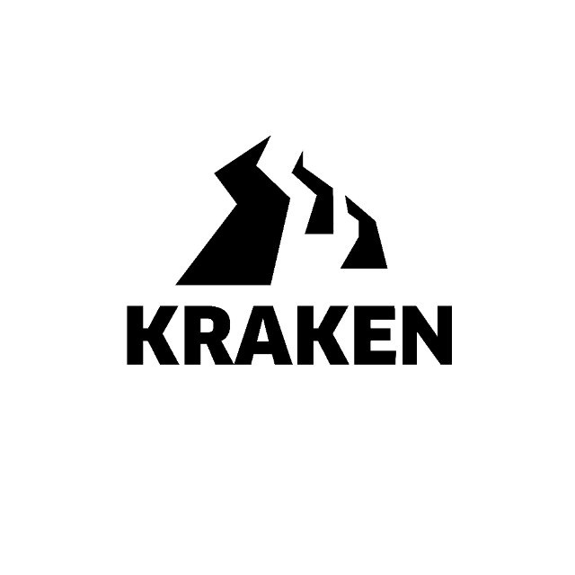
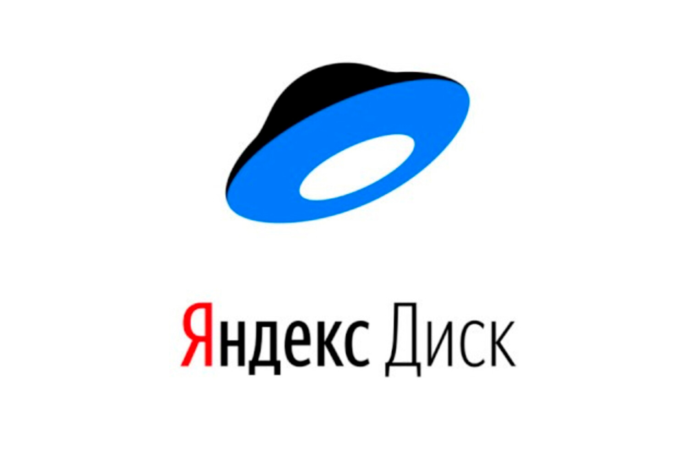
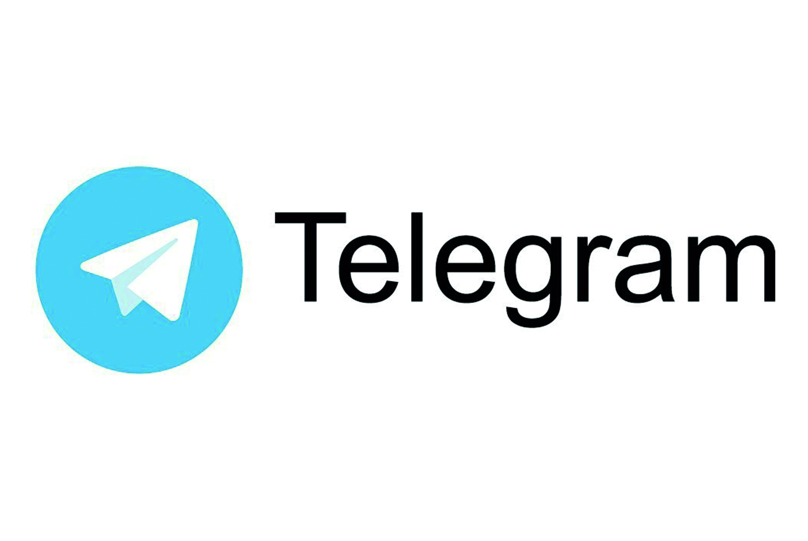
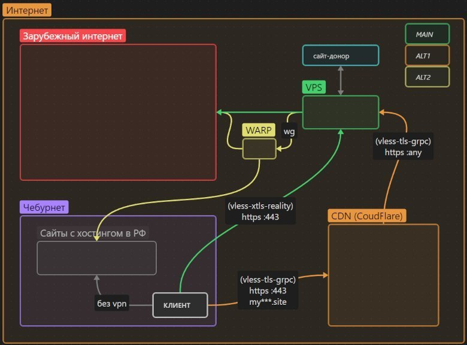
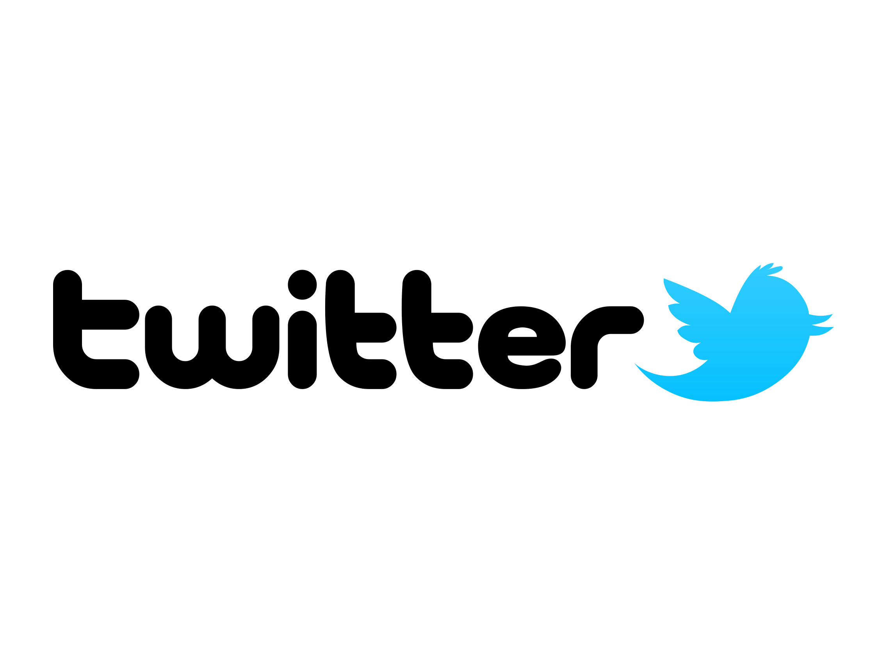

Что такое Darknet?
Darknet, или тёмный интернет, представляет собой часть интернета, которая не индексируется обычными поисковыми системами и обеспечивает высокий уровень анонимности для пользователей. На Darknet можно найти различные веб-проекты, некоторые из которых могут быть направлены на защиту личной информации, обход цензуры, торговлю товарами и услугами, которые запрещены в большинстве стран, и многое другое.
Ниже приведу несколько примеров проектов, которые могут быть созданы и использованы на Darknet:
- Darknet маркетплейс: Платформа для продажи товаров и услуг, которые могут быть недоступны или запрещены в обычных интернет-магазинах. Часто используют криптовалюты для анонимности сделок.
- Сайт для обмена информацией и файлами: Darknet используется для обмена конфиденциальной информацией или файлами без риска наблюдения.
- Форумы и социальные сети: Анонимные площадки для общения и обсуждений свободных тем.
- Сервисы для обхода цензуры: Доступ к заблокированным сайтам с помощью Tor и других технологий.
- Блоги и информационные порталы: Анонимные блоги и сайты для публикации статей и мнений.
Проекты на Darknet часто основываются на шифровании, использовании Tor и криптовалютах. Тем не менее, важно помнить о законах и рисках при использовании тёмной сети.




